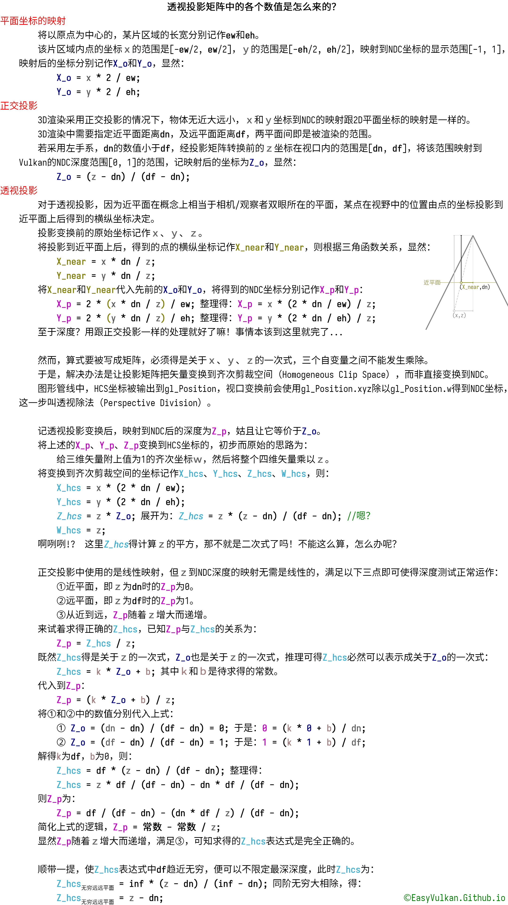

Ch8-2 深度测试和深度可视化
本节分成两件事情：
1.进行3D渲染，绘制多个远近不同的立方体，使用深度测试呈现出正确的遮挡关系。示例代码：Ch8-2.hpp
2.离屏渲染深度贴图，然后将其采样到屏幕。示例代码： TODO
通过采样深度贴图，使深度可视化，以更直观地理解一些深度相关的功能。
投影变换
在进入正题之前，首先要非常简要地讲述下渲染3D物体相关的基本知识。
3D渲染往往会用到MVP矩阵，MVP分别指模型（model）、观察（view）、投影（projection）三个矩阵。
-
模型矩阵：模型矩阵是描述物体在场景中的位置、旋转、放缩的矩阵。
-
观察矩阵：观察矩阵将用场景中物体的坐标，从世界坐标系变换到以相机/观察者的位置为原点的参考系（称相机坐标系，或观察坐标系）。
-
投影矩阵：投影矩阵将相对于观察者的坐标变换到NDC坐标（2D/正交投影），或离NDC坐标只有一步之遥的剪裁空间坐标（透视投影）。
为简化叙事，这一节不会使用模型矩阵和观察矩阵。我预先准备了经透视投影变换后，能出现在屏幕中的3D模型顶点数据。
GLM中的透视投影矩阵
这节我们会使用透视投影矩阵，GLM中的生成透视投影矩阵的函数可以分为两类：名字中带perspective的和frustum(...)。
首先注意，下文的infinitePerspective(...)函数从GLM1.0.0（24年1月24日release）开始，才有对应Vulkan的NDC深度范围的版本。
通常情况下，你只要会用以下这两个函数即可：
template<template T> mat4 infinitePerspective(T fovy, T aspect, T zNear); template<template T> mat4 perspective( T fovy, //垂直视场角，弧度制 T aspect,//宽高比 T zNear, //近平面的位置 T zFar //远平面的位置 );
-
视场角即从观察者出发，上下左右的观察范围边界之间的夹角。 视场角越大，近大远小的效果越显著。
3D渲染中，需要指定相机坐标系中的近平面和远平面，两平面之间即是能被渲染的范围。
远平面可以是无穷远，但你在perspective(...)中指定远平面为inf的话，运算会出错，infinitePerspective(...)是专用于指定无穷远的远平面的函数。
template<template T> mat4 perspectiveFov( T fov, //垂直视场角，弧度制 T width, //宽 T height,//高 T near, //近平面的位置 T far //远平面的位置 );
-
虽然fov没有后缀y，但确实是垂直视场角，不是水平视场角。
-
width和height不用是任何具体对象的宽和高，只要成一定比例，算出的矩阵就是一样的。
perspectiveFov(...)和perspective(...)虽然变量名和底层实现不同（估计不是同一个人写的），
perspectiveFov(fov, w, h, n, f)几乎等价于perspective(fov, w / h, n, f)，两者的运算逻辑本质上是相同的，运算结果的差值在小数点后7位数。
template<template T> mat4 tweakedInfinitePerspective(T fov, T aspect, T zNear, T ep);
tweakedInfinitePerspective(...)是给OpenGL用的，在Vulkan里用不着。
Vulkan和OpenGL中，默认的视口深度范围是[0, 1]，亦是不开启扩展的情况下所容许的深度界限。
上述函数处理这种情况：GL中，NDC深度范围为[-1, 1]，映射到视口深度范围[0, 1]时可能发生精度损失，使得视口深度本该接近或等于的1的片段，视口深度略大于1，导致片段被丢弃。
Vulkan中NDC深度的范围本就是[0, 1]，因此不需要这个函数。
template<template T> mat4 frustum(T left, T right, T bottom, T top, T nearVal, T farVal);
frustum(...)让你填写上下左右的边界，看着似乎比要你填视场角的情况直观。
然而，当你傻乎乎地往参数里填入交换链图像大小的一半之后，程序一跑可能会发觉什么都没有，或者物体小得惊人（除非你的顶点坐标都大得惊人）。总之参数不易指定。
该函数相比perspective(...)的优势在于，后者生成的矩阵只会把相机参考系下的原点映射到视口中心，而通过向frustum(...)传入不对称的left和right（或bottom和top），就能把相机参考系的原点映射到偏离视口中心的位置（大概写VR程序用得到）。
有关投影变换的数学
Ch4-1 着色器模组中简单地讲了相机参考系坐标到NDC坐标的转换流程，这里来具体说一下投影矩阵底层的数学运算（你可以跳过不读这部分）。
投影矩阵本质上只是将4个一次函数写成了矩阵的形式，因此完全可以在初中数学的范畴内进行解释：
-
上图中的语境是左手系和NDC深度[0,1]，GLM中与上图推导结果对应的函数为perspectiveLH_ZO(...)和infinitePerspectiveLH_ZO(...)。
绘制多个立方体的流程
在你已经写过了Ch7代码的基础上，进行3D渲染，绘制多个立方体的步骤如下：
1.创建深度附件、渲染通道和帧缓冲
2.创建顶点和索引缓冲区
3.书写着色器并创建管线
4.生成投影矩阵
5.绑定管线和各种缓冲区，更新常量，绘制
创建渲染通道和帧缓冲
在前一节里已经将深度模板附件封装为了depthStencilAttachment类型。于是向EasyVulkan.hpp，easyVulkan命名空间中，定义一个vector用来存放与交换链图像相应数量的深度模板附件，及用来创建深度模板附件、渲染通道、帧缓冲的函数CreateRpwf_Canvas(...)：
std::vector<depthStencilAttachment> dsas_screenWithDS; const auto& CreateRpwf_Canvas(VkFormat depthStencilFormat = VK_FORMAT_D24_UNORM_S8_UINT) { static renderPassWithFramebuffer rpwf; ExecuteOnce(rpwf);//防止重复执行 static VkFormat dsFormat = depthStencilFormat;//因为一会儿需要用lambda定义重建交换链时的回调函数，把格式存到静态变量 /*待后续填充*/ return rpwf; }
-
在向此函数传入参数前，应调用depthStencilAttachment::FormatAvailability(...)验证向此函数提供的格式是否收支持。
开始创建渲染通道，首先书写子通道描述：
VkAttachmentDescription attachmentDescriptions[2] = { {//颜色附件 .format = graphicsBase::Base().SwapchainCreateInfo().imageFormat, .samples = VK_SAMPLE_COUNT_1_BIT, .loadOp = VK_ATTACHMENT_LOAD_OP_CLEAR, .storeOp = VK_ATTACHMENT_STORE_OP_STORE, .stencilLoadOp = VK_ATTACHMENT_LOAD_OP_DONT_CARE, .stencilStoreOp = VK_ATTACHMENT_STORE_OP_DONT_CARE, .finalLayout = VK_IMAGE_LAYOUT_PRESENT_SRC_KHR }, {//深度模板附件 .format = dsFormat, .samples = VK_SAMPLE_COUNT_1_BIT, .loadOp = dsFormat != VK_FORMAT_S8_UINT ? VK_ATTACHMENT_LOAD_OP_CLEAR : VK_ATTACHMENT_LOAD_OP_DONT_CARE, .storeOp = VK_ATTACHMENT_STORE_OP_DONT_CARE, .stencilLoadOp = dsFormat >= VK_FORMAT_S8_UINT ? VK_ATTACHMENT_LOAD_OP_CLEAR : VK_ATTACHMENT_LOAD_OP_DONT_CARE, .stencilStoreOp = VK_ATTACHMENT_STORE_OP_DONT_CARE, .finalLayout = VK_IMAGE_LAYOUT_DEPTH_STENCIL_ATTACHMENT_OPTIMAL } }; VkAttachmentReference attachmentReferences[2] = { { 0, VK_IMAGE_LAYOUT_COLOR_ATTACHMENT_OPTIMAL }, { 1, VK_IMAGE_LAYOUT_DEPTH_STENCIL_ATTACHMENT_OPTIMAL } }; VkSubpassDescription subpassDescription = { .pipelineBindPoint = VK_PIPELINE_BIND_POINT_GRAPHICS, .colorAttachmentCount = 1, .pColorAttachments = attachmentReferences, .pDepthStencilAttachment = attachmentReferences + 1 };
-
由于我们这次只有一个渲染通道，到循环中再次在该通道中绘制前不会再有深度或模板测试，因此渲染通道结束时无需保留深度和模板值，深度模板附件的storeOp和stencilStoreOp为VK_ATTACHMENT_STORE_OP_DONT_CARE。
-
这里根据格式是否有深度/模板值的分量，来确定深度模板附件的loadOp和stencilLoadOp是否为清空（虽然本节中不会使用模板测试）。
而即便使用的是仅深度或仅模板的格式，只要没开启separateDepthStencilLayouts硬件特性，深度模板附件在渲染通道中的内存布局就只能是VK_IMAGE_LAYOUT_DEPTH_STENCIL_ATTACHMENT_OPTIMAL。
填写子通道依赖，创建渲染通道：
VkSubpassDependency subpassDependency = { .srcSubpass = VK_SUBPASS_EXTERNAL, .dstSubpass = 0, .srcStageMask = VK_PIPELINE_STAGE_COLOR_ATTACHMENT_OUTPUT_BIT, .dstStageMask = VK_PIPELINE_STAGE_EARLY_FRAGMENT_TESTS_BIT, .srcAccessMask = 0, .dstAccessMask = VK_ACCESS_DEPTH_STENCIL_ATTACHMENT_WRITE_BIT, .dependencyFlags = VK_DEPENDENCY_BY_REGION_BIT }; VkRenderPassCreateInfo renderPassCreateInfo = { .attachmentCount = 2, .pAttachments = attachmentDescriptions, .subpassCount = 1, .pSubpasses = &subpassDescription, .dependencyCount = 1, .pDependencies = &subpassDependency }; rpwf.renderPass.Create(renderPassCreateInfo);
-
对深度模板附件的清空操作发生在早期片段测试（early fragment test）阶段，最迟可以在该阶段进行内存布局转换，因该阶段早于颜色附件输出阶段，dstStageMask填写为对应该阶段的bit。清空深度模板附件对应的操作类型是VK_ACCESS_DEPTH_STENCIL_ATTACHMENT_WRITE_BIT。
惯例，把创建和销毁帧缓冲的部分放入lambda：
auto CreateFramebuffers = [] { dsas_screenWithDS.resize(graphicsBase::Base().SwapchainImageCount()); rpwf.framebuffers.resize(graphicsBase::Base().SwapchainImageCount()); /*待后续填充*/; }; auto DestroyFramebuffers = [] { dsas_screenWithDS.clear(); rpwf.framebuffers.clear(); }; graphicsBase::Base().AddCallback_CreateSwapchain(CreateFramebuffers); graphicsBase::Base().AddCallback_DestroySwapchain(DestroyFramebuffers); CreateFramebuffers(); return rpwf;
因为这次的深度模板附件的大小与交换链图像一致，所以其创建和销毁当然也放在相应lambda中。
创建与交换链图像相应个数的深度模板附件：
auto CreateFramebuffers = [] { dsas_screenWithDS.resize(graphicsBase::Base().SwapchainImageCount()); rpwf.framebuffers.resize(graphicsBase::Base().SwapchainImageCount()); for (auto& i : dsas_screenWithDS) i.Create(dsFormat, windowSize, 1, VK_SAMPLE_COUNT_1_BIT, VK_IMAGE_USAGE_TRANSIENT_ATTACHMENT_BIT); /*待后续填充*/; };
-
既然在本次的应用场景中，渲染通道之外用不着深度模板附件，那么在图像用途中指定VK_IMAGE_USAGE_TRANSIENT_ATTACHMENT_BIT，使其可被惰性分配以优化内存开销。
毫无难度地创建帧缓冲：
auto CreateFramebuffers = [] { dsas_screenWithDS.resize(graphicsBase::Base().SwapchainImageCount()); rpwf.framebuffers.resize(graphicsBase::Base().SwapchainImageCount()); for (auto& i : dsas_screenWithDS) i.Create(dsFormat, windowSize, 1, VK_SAMPLE_COUNT_1_BIT, VK_IMAGE_USAGE_TRANSIENT_ATTACHMENT_BIT); VkFramebufferCreateInfo framebufferCreateInfo = { .renderPass = rpwf.renderPass, .attachmentCount = 2, .width = windowSize.width, .height = windowSize.height, .layers = 1 }; for (size_t i = 0; i < graphicsBase::Base().SwapchainImageCount(); i++) { VkImageView attachments[2] = { graphicsBase::Base().SwapchainImageView(i), dsas_screenWithDS[i].ImageView() }; framebufferCreateInfo.pAttachments = attachments; rpwf.framebuffers[i].Create(framebufferCreateInfo); } };
顶点和索引数据
首先在main.cpp中定义顶点数据的结构体：
struct vertex { glm::vec3 position; glm::vec4 color; };
立方体一共8个顶点，但我想要它每个面都是纯色，所以每个面以4个颜色相同的顶点来表达，一共要写24个顶点：
vertex vertices[] = { //x+ { { 1, 1, -1 }, { 1, 0, 0, 1 } }, { { 1, -1, -1 }, { 1, 0, 0, 1 } }, { { 1, 1, 1 }, { 1, 0, 0, 1 } }, { { 1, -1, 1 }, { 1, 0, 0, 1 } }, //x- { { -1, 1, 1 }, { 0, 1, 1, 0 } }, { { -1, -1, 1 }, { 0, 1, 1, 0 } }, { { -1, 1, -1 }, { 0, 1, 1, 0 } }, { { -1, -1, -1 }, { 0, 1, 1, 0 } }, //y+ { { 1, 1, -1 }, { 0, 1, 0, 1 } }, { { 1, 1, 1 }, { 0, 1, 0, 1 } }, { { -1, 1, -1 }, { 0, 1, 0, 1 } }, { { -1, 1, 1 }, { 0, 1, 0, 1 } }, //y- { { 1, -1, -1 }, { 1, 0, 1, 1 } }, { { -1, -1, -1 }, { 1, 0, 1, 1 } }, { { 1, -1, 1 }, { 1, 0, 1, 1 } }, { { -1, -1, 1 }, { 1, 0, 1, 1 } }, //z+ { { 1, 1, 1 }, { 0, 0, 1, 1 } }, { { 1, -1, 1 }, { 0, 0, 1, 1 } }, { { -1, 1, 1 }, { 0, 0, 1, 1 } }, { { -1, -1, 1 }, { 0, 0, 1, 1 } }, //z- { { -1, 1, -1 }, { 1, 1, 0, 1 } }, { { -1, -1, -1 }, { 1, 1, 0, 1 } }, { { 1, 1, -1 }, { 1, 1, 0, 1 } }, { { 1, -1, -1 }, { 1, 1, 0, 1 } } }; vertexBuffer vertexBuffer_perVertex(sizeof vertices); vertexBuffer_perVertex.TransferData(vertices);
上述顶点数据是围绕坐标原点的一个长宽高都为2的立方体。
因为这次不使用观察矩阵，观察位置便处于世界坐标系的原点，如果不给上述顶点数据加任何位置偏移，观察位置就会是在立方体内部。
创建逐实例输入的顶点缓冲区，指定多个立方体的位置：
glm::vec3 offsets[] = { { -4, -4, 6 }, { -4, 4, 10 }, { -4, -4, 14 }, { -4, 4, 18 }, { -4, -4, 22 }, { -4, 4, 26 }, { 4, -4, 6 }, { 4, 4, 10 }, { 4, -4, 14 }, { 4, 4, 18 }, { 4, -4, 22 }, { 4, 4, 26 } }; vertexBuffer vertexBuffer_perInstance(sizeof offsets); vertexBuffer_perInstance.TransferData(offsets);
-
还是因为不使用观察矩阵，观察方向默认为+z方向，位置坐标的z分量为正值使立方体在观察范围内。
这次将会使用VK_PRIMITIVE_TOPOLOGY_TRIANGLE_LIST为图元拓扑类型绘制立方体，那么便需要36个索引：
uint16_t indices[36] = { 0, 1, 2, 2, 1, 3 }; kw (size_t i = 1; i < 6; i++) kw (size_t j = 0; j < 6; j++) indices[i * 6 + j] = indices[j] + i * 4; indexBuffer indexBuffer(sizeof indices); indexBuffer.TransferData(indices);
-
这里
{ 0, 1, 2, 2, 1, 3 }的顶点顺序有讲究，详见之后创建管线时有关背面剔除的说明。
书写着色器并创建管线
Into3D.vert.shader
#version 460 #pragma shader_stage(vertex) layout(location = 0) in vec3 i_Position; //逐顶点 layout(location = 1) in vec4 i_Color; //逐顶点 layout(location = 2) in vec3 i_InstancePosition;//逐实例 layout(location = 0) out vec4 o_Color; layout(push_constant) uniform pushConstants { mat4 proj;//投影矩阵 }; void main() { gl_Position = proj * vec4(i_Position + i_InstancePosition, 1); o_Color = i_Color; }
-
通过将矢量右乘到投影矩阵，将相机坐标系（这次没相机所以等价于世界坐标系了）下的坐标转换到齐次剪裁空间坐标。
Into3D.frag.shader
#version 460 #pragma shader_stage(fragment) layout(location = 0) in vec4 i_Color; layout(location = 1) out vec4 o_Color; void main() { o_Color = i_Color; }
创建管线
定义相关对象，创建管线布局：
pipelineLayout pipelineLayout_into3d; pipeline pipeline_into3d; const auto& RenderPassAndFramebuffers_Screen() { static const auto& rpwf = easyVulkan::CreateRpwf_ScreenWithDS(); return rpwf; } void CreateLayout() { VkPushConstantRange pushConstantRange = { VK_SHADER_STAGE_VERTEX_BIT, 0, 64 }; VkPipelineLayoutCreateInfo pipelineLayoutCreateInfo{ .pushConstantRangeCount = 1, .pPushConstantRanges = &pushConstantRange }; pipelineLayout_into3d.Create(pipelineLayoutCreateInfo); }
创建管线：
void CreateLayout() { static shaderModule vert("shader/Into3d.vert.spv"); static shaderModule frag("shader/Into3d.frag.spv"); VkPipelineShaderStageCreateInfo shaderStageCreateInfos[2] = { vert.StageCreateInfo(VK_SHADER_STAGE_VERTEX_BIT), frag.StageCreateInfo(VK_SHADER_STAGE_FRAGMENT_BIT) }; auto Create = [] { graphicsPipelineCreateInfoPack pipelineCiPack; pipelineCiPack.createInfo.layout = pipelineLayout_into3d; pipelineCiPack.createInfo.renderPass = RenderPassAndFramebuffers().renderPass; pipelineCiPack.vertexInputBindings.emplace_back(0, sizeof(vertex), VK_VERTEX_INPUT_RATE_VERTEX); pipelineCiPack.vertexInputBindings.emplace_back(0, sizeof(glm::vec3), VK_VERTEX_INPUT_RATE_INSTANCE); pipelineCiPack.vertexInputAttributes.emplace_back(0, 0, VK_FORMAT_R32G32B32_SFLOAT, offsetof(vertex, position)); pipelineCiPack.vertexInputAttributes.emplace_back(1, 0, VK_FORMAT_R32G32B32A32_SFLOAT, offsetof(vertex, color)); pipelineCiPack.vertexInputAttributes.emplace_back(2, 1, VK_FORMAT_R32G32B32_SFLOAT, 0); pipelineCiPack.inputAssemblyStateCi.topology = VK_PRIMITIVE_TOPOLOGY_TRIANGLE_LIST; pipelineCiPack.viewports.emplace_back(0.f, 0.f, float(windowSize.width), float(windowSize.height), 0.f, 1.f); pipelineCiPack.scissors.emplace_back(VkOffset2D{}, windowSize); //开启背面剔除 pipelineCiPack.rasterizationStateCi.cullMode = VK_CULL_MODE_BACK_BIT; pipelineCiPack.rasterizationStateCi.frontFace = VK_FRONT_FACE_COUNTER_CLOCKWISE;//默认值，为0 pipelineCiPack.multisampleStateCi.rasterizationSamples = VK_SAMPLE_COUNT_1_BIT; //开启深度测试 pipelineCiPack.depthStencilStateCi.depthTestEnable = VK_TRUE; pipelineCiPack.depthStencilStateCi.depthWriteEnable = VK_TRUE; pipelineCiPack.depthStencilStateCi.depthCompareOp = VK_COMPARE_OP_LESS; pipelineCiPack.colorBlendAttachmentStates.push_back({ .colorWriteMask = 0b1111 }); pipelineCiPack.UpdateAllArrays(); pipelineCiPack.createInfo.stageCount = 2; pipelineCiPack.createInfo.pStages = shaderStageCreateInfos_into3d; pipeline_Into3d.Create(pipelineCiPack); }; auto Destroy = [] { pipeline_into3d.~pipeline(); }; graphicsBase::Base().AddCallback_CreateSwapchain(Create); graphicsBase::Base().AddCallback_DestroySwapchain(Destroy); Create(); }
3D渲染中，对于有内外之分的封闭物体（且一般不透明），在栅格化阶段直接剔除其看不见的面以节省运算性能，这叫面剔除。
这里将cullMode指定为VK_CULL_MODE_BACK_BIT以开启背面剔除，然后所谓正背面是由顶点顺序决定的，VK_FRONT_FACE_COUNTER_CLOCKWISE意味着，如果一个三角形中三个顶点的坐标，依被着色器读取的顺序呈现逆时针，那么就是正面。
这里所谓的坐标为输出到gl_Position的坐标，或NDC坐标（x和y都除以负的w时，相当于双重镜像，或说旋转180°，于是顺/逆时针不变）。
解释先前{ 0, 1, 2, 2, 1, 3 }的顶点顺序：对于我给出的立方体顶点数据中任意面的四个顶点中，0和3号顶点、1和2号顶点各构成对角线，即0和3在1和2构成的线不同侧。那么若{ 0, 1, 2 }的三角形为逆时针，则{ 1, 2, 3 }的三角形必然为顺时针。因此这里第二个三角形的顶点顺序得是{ 2, 1, 3 }。
如果你没有在片段着色器中书写涉及判定gl_FrontFacing的逻辑的话，VK_CULL_MODE_BACK_BIT和VK_FRONT_FACE_COUNTER_CLOCKWISE的组合，跟VK_CULL_MODE_FRONT_BIT和VK_FRONT_FACE_CLOCKWISE的组合效果是一样的。
TODO 因事中断写作，施工中绘制
施工中
采样深度贴图